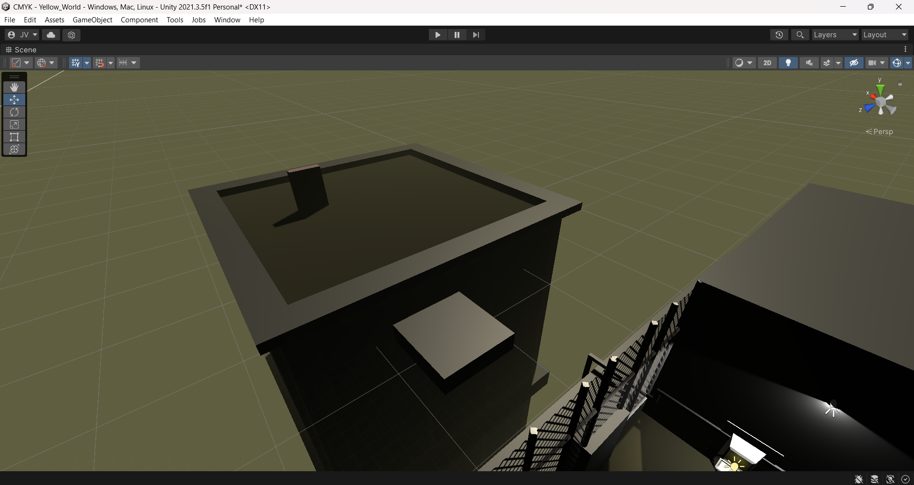
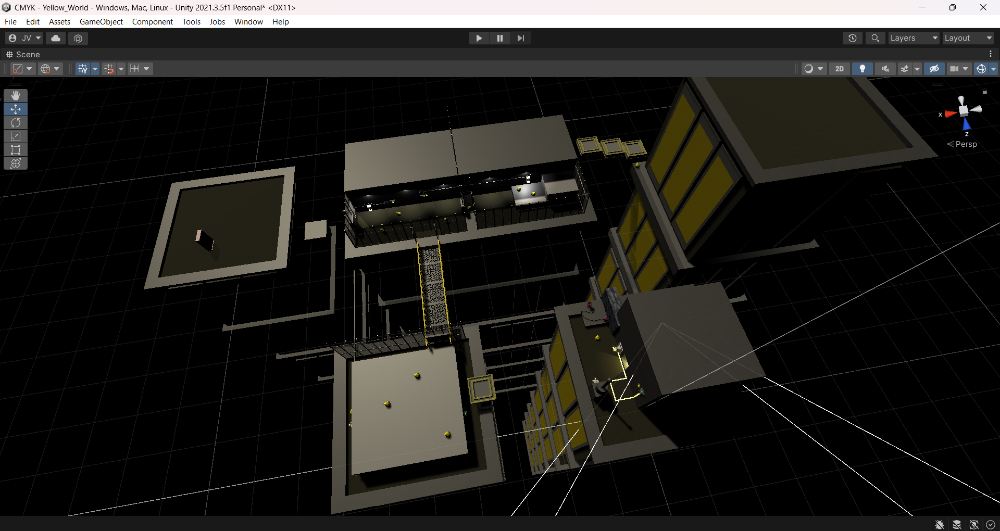

- - - Synopsis - - -
Paint the town Cyan, Magenta and Yellow in this puzzle-platformer themed around the four primary subtractive colors. Blast your way through the rubble of a volcanic crater, slip and slide gigantic ice cubes across an icy tundra, and energize the power grid as you parkour your way across a cyberpunk cityscape, collecting the three pigments that are the key to your journey's end.
Welcome to the color spectrum, artist-in-the-making.
- - - About the Game - - -
CMYK is the final group project of a mid-level games design class from the Spring 2024 semester, following two other (less successful) microgame assignments earlier that class term. CMYK, in comparison, was far more successful, and was my first real opportunity to express myself in the world of level design. It also, as it happens, is the first game which I (partially) developed which got a public release - and one which stands as a testament to my improvement in the field since I first began way back in 2020.
Also, I can take credit for the game being named "Cyan-Magenta-Yellow-Key", instead of "Red-Blue-Yellow". This was a suggestion of mine to use a more up-to-date subtractive color model rather than the "traditional", albeit incorrect, theory typically taught in elementary education. I have an eye for external consistency, even if it means bucking established conventions for the sake of accuracy, which I'm always proud of.
- - - Highlighted Work - - -
Yellow Level Whitebox
The original whitebox for the Yellow level, in both perspective and isometric views. This took a surprisingly long time for me to complete due to unrelated life issues, but I managed to cook up a general layout by the deadline.
The same whitebox in isometric overhead view, detailing the general layout of the complex. Though the basic geometry remained mostly the same in the final release, the order in which the buildings are visited did not due to gameplay changes made since the whitebox.
Yellow Level Design
The final level, seen in full. Credit to the other team members for the full art assets used, and the coding for the logic gates.
Closeup of level spawn and surrounding gadgets. The puzzle of this level is based around the use of logic gates; different switches can be painted with the yellow brush to toggle between an "on" and "off" state, each connecting to a series of "OR" or "NOT" gates which in turn govern the operation of doors and moving platforms.
A view of an alternate pathway unlocked by having previously completed the red level; by blowing up a piece of volcanic rock, the player can shimmy across the center building's ledge and hop across three floating platforms to gain early access to the level's final gate, and from there, the level exit.
The second building, accessed via a moving platform. Both switches on either side must be hit to open the next door.
Part 3 is a bit tricky; it may not be obvious at first, but to open the door in the last image, the player must hit the switch inside the fenced-in area before backtracking to the second building to disable one of the previously-activated switches.
The last part is a cakewalk; simply jump up the ledges and hit the final switch...

...before heading out the final door and touching the exit beacon.

Perspective and iso views of the level with fog disabled.